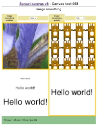

The Scrawl-canvas library has been designed to make it easier to create and use <canvas> presentations and scenes in a web page. Canvases discovered on a page, or added to it, will be enhanced by the library to help make them more responsive and accessible, and easy to interact with.
These demos represent the library's testing suite. They have been designed to cover as much functionality as possible in sets of integration tests. Testing is (currently) conducted by hand: all demos must run as expected before changes can be pushed to the library's v8 or master branches on GitHub.
Core functionality tests:
Scrawl-canvas represents a system to define a set of graphical entitys and their associated styles (colors, gradients, patterns) and assets (images, spritesheets, video, media stream, noise, other canvas elements), then position (absolutely, relatively, by reference to other entitys) and animate them (by delta, by tween) across the canvas - often in response to user interaction. Animation can also be extended to styles and asset display.
Entitys include:
- Basic shapes such as rectangles (Block), circles (Wheel) and text (Phrase).
- Text can be automatically broken over multiple lines, and different styling applied to words and individual letters; text can be animated along paths. CSS font strings are supported as far as possible, including font-sizes declared using suffixes such as 'em', 'rem', 'vw', 'pt', etc.
- SVG path-defined entitys (Shape), and a range of pre-defined, path-based entitys (Oval, Rectangle, Tetragon, Polygon, Star, Spiral, Cog, Line, Quadratic, Bezier, Polyline).
- Line, Quadratic, Bezier and Polyline entitys can have their start, end and control coordinates positioned absolutely, relatively, or by reference to other entitys (including along paths).
- Images, video and related pixel-based image streams (Picture), both in whole and in part; the proportion of the image displayed can be controlled and animated. Spritesheet animation is also supported.
- Compound entitys built on top of other entitys which can be used to combine the output of images in various ways (Grid) or distort the output (Loom, Mesh).
Scrawl-canvas helps developers build graphical representations and scenes that are real-time responsive to their DOM environment, and easier to make accessible to non-visibility-based technology. The coding paradigm encourages developers to split their code into ES6 modules: this makes code easier to maintain and easier to reuse.
Canvas 001
Block and Wheel entitys (make, clone, method); drag and drop block and wheel entitys
Canvas 002
Block and wheel entity positioning (start, pivot, mimic, mouse)
Canvas 005
Cell-locked, and Entity-locked, gradients; animating gradients by delta, and by tween
Canvas 007
Apply filters at the entity, group and cell level
Canvas 008
Picture entity position; manipulate copy attributes
Canvas 009
Pattern styles; Entity web link anchors; Dynamic accessibility
Canvas 010
Use video sources and media streams for Picture entitys
Canvas 011
Shape entity (make, clone, method); drag and drop shape entitys
Canvas 012
Shape entity position; shape entity as a path for other artefacts to follow
Canvas 013
Path-defined entitys: Oval, Rectangle, Line, Quadratic, Bezier, Tetragon, Polygon, Star, Spiral, Cog
Canvas 014
Line, Quadratic and Bezier entitys - control lock alternatives
Canvas 015
Phrase entity (make, clone, method, multiline)
Canvas 015a
Phrase entity - cache output to improve render speeds
Canvas 016
Phrase entity position and font attributes; Block mimic functionality
Canvas 017
Phrase entity - test lineHeight, letterSpacing and justify attributes; Section classes functionality
Canvas 019
Gradient and Color factories - transparency
Canvas 019a
Gradient and Color factories - transparency - alternative approach using Cells instead of images
Canvas 020
Testing createImageFromXXX functionality
Canvas 022
Grid entity - basic functionality (color, gradients)
Canvas 023
Grid entity - using picture-based assets (image, video, sprite)
Canvas 027
Video control and manipulation; chroma-based hit zone
Canvas 028
Image magnifier; test some composite operations

Canvas 031
Cell generation and processing order - kaleidoscope clock
Canvas 033
User preferences: prefers-color-scheme; prefers-reduced-motion; Javascript disabled
Canvas 034
Determine the displayed shape of the visible canvas; react to changes in the displayed shape
Canvas 036
Cell artefact-like positional functionality
Canvas 039
Detecting mouse/pointer cursor movements across a non-base Cell
Canvas 041
Access and use a canvas context engine using the makeAnimation factory
Canvas 045
Use clipping entitys as pivots; clipping entitys and cascade events
Canvas 046
Kill cycles for Cell, Group, Tween/Ticker, Picture and Asset objects, and Picture source elements in the DOM
Canvas 047
Easing functions for Color and Tween factories
Filters functionality tests
The Scrawl-canvas filters functionality is inspired by SVG filters. Filter operations can be ordered in ways to combine different sets of operations to achieve complex effects. The library comes with an extensive set of pre-built filters, including:
- color and alpha channel manipulations;
- matrix, pixellate, blur;
- compositing and blending operations;
- image and noise asset upload (for use with composites and blends); and
- displacement mapping.
Filters can be animated using Scrawl-canvas tween functionality.
Filters 002
Parameters for: red, green, blue, cyan, magenta, yellow, notred, notgreen, notblue, grayscale, sepia, invert filters
Filters 003
Parameters for: brightness, saturation filters
Filters 015
Using assets in the filter stream; filter compositing
CSS/SVG filter String functionality tests
In addition to Scrawl-canvas's extensive filters functionality, the library also supports the CSS filter property. Be aware that CSS and SVG based filters are not currently supported by all browsers (specifically: Safari).
Filters 501
Canvas engine filter strings (based on CSS filters)
Particles and physics tests
Scrawl-canvas includes a particle-based physics engine. Particle systems (Emitter, Net, Tracer) are treated as entitys and can be positioned and rotated like any other entity.
Particles 001
Emitter entity, and Particle World, basic functionality
Particles 003
Position Emitter entity: start; pivot; mimic; path; mouse; drag-and-drop
Particles 006
Fixed number of particles in a field; preAction and postAction functionality
Particles 007
Particle Force objects: generation and functionality
Particles 008
Net entity: generation and basic functionality, including Spring objects
Particles 012
Use Net entity particles as reference coordinates for other artefacts
Particles 014
Emitter functionality: generate from existing particles
Particles 015
Emitter functionality: generate from existing particle histories
Module and packet code tests
Many Scrawl-canvas objects can be saved to JSON strings known as packets, and restored from them. Scrawl-canvas clone functionality is built on top of its packet functionality; every demo that invokes a clone call on a Scrawl-canvas artefact or object is also testing that artefact/object's packet functionality. Similarly, many demos test object kill functionality, using packets to restore the objects after they have been killed.
Scrawl-canvas code is easy to use in ES6 modules.
Modular code, and the ability to kill and restore Scrawl-canvas objects, becomes important when using Scrawl-canvas in framework environments such as React or Svelte.
Modules 001
Scrawl-canvas modularized code - London crime charts
Modules 003
Factory functions to create more complex, compound entitys
Packets 001
Save and load Scrawl-canvas entity using text packets
Packets 002
Scrawl-canvas packets - save and load a range of different entitys
Snippet code tests
Scrawl-canvas snippets are module-based functions which can be imported into any other code and applied to DOM elements. The functions add a canvas to the DOM element to act as its background, allowing complex displays and animations to be added to the element.
The results are similar to the Houdini CSS Paint API, though the path to achieving those results is different.
Snippet canvases are responsive: a well-written snippet will be able to adapt to changes in its host element's position, dimensions and styling attributes in real time, and should be able to tidy up after itself if its host element gets removed from the web page (for instance when it is part of a component).
The idea behind the snippets functionality is to allow third party developers to develop code Snippets which other developers can then import and apply in their own sites. Note that there are inherent dangers in this approach: it is always safer to host and review snippets code yourselves, to minimize the opportunities for third parties to inject malignant code into unsuspecting websites!
Snippets 003
DOM element snippet - test canvas adaption to local element variations
Snippets 004
Snippets included in the Scrawl-canvas demo/snippets folder
DOM and Stack tests
Scrawl-canvas <canvas> elements do not live in splendid isolation; the library is aware of each canvas's wider environment. Functionality is included to add and/or remove event listeners to other elements which can be used to control the canvas display. The Scrawl-canvas animation loop can also be stopped and restarted as required. New canvases can be added to the web page in real time, and removed just as easily.
Scrawl-canvas stacks extend the library's unique positioning, manipulation and animation functionality to DOM elements. This allows us to combine stacks and canvases so that DOM elements can be used to position canvas entitys, and give us the power to animate DOM elements along path-based entitys. It also gives users the power to interact with <canvas> elements rotated in 3D space.
DOM 001
Loading the scrawl-canvas library using a script tag in the HTML code
DOM 002
Element mouse, pivot and mimic functionality
DOM 003
Dynamically create and clone Element artefacts; drag and drop elements (including SVG elements) around a Stack
DOM 004
Limitless rockets (clone and destroy elements, tweens, tickers)
DOM 006
Tween actions on a DOM element; tracking tween and ticker activity (analytics)
DOM 007
Animate a DOM element using the delta attribute object; dynamically change classes on a DOM element
DOM 009
Stop and restart the main animation loop; add and remove event listener; retrieve all artefacts at a given coordinate
DOM 010
Add and remove (kill) Scrawl-canvas stack elements programmatically
DOM 011
Canvas controller 'fit' attribute; Cell positioning (mouse)
DOM 012
Add and remove (kill) Scrawl-canvas canvas elements programmatically
DOM 013
Track mouse movements over a 3d rotated and scaled canvas element
DOM-015
Use stacked DOM artefact corners as pivot points
DOM-016
Determine the displayed shape of the visible stack; react to changes in the displayed shape